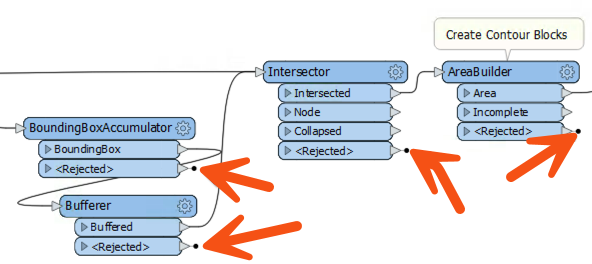
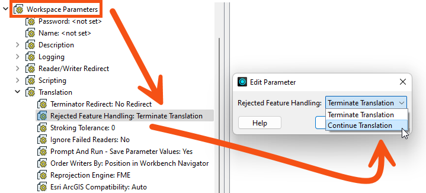
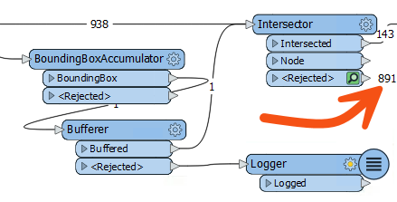

After completing this lesson, you’ll be able to:
In the classical sense, prototyping means creating an incomplete application as a way to evaluate the feasibility of a project.
Here, we'll stretch the definition to mean how to build a complex FME project incrementally, starting with an empty workspace and building it piece by piece to deliver a result that matches the final specification.
We will cover the techniques used for building a workspace incrementally and how to handle data rejected by a transformer.
The critical development technique for FME workspaces is incremental updates.
The steps to this technique are:
Although a range of 3-10 transformers is an arbitrary number, the more transformers you add, the more difficult it would be to identify the source of any problems. Beyond ten transformers is the point at which you should consider chopping that process into smaller sections.
Here, an author has planned their workspace by laying it out as a set of bookmarks on the canvas:
Now, the author can complete and test each section at a time, keeping the overall goal in mind simultaneously.
It can be easy to start developing a workspace and forget to save it! FME keeps a recovery file as soon as the workspace is saved for the first time, but until then, you risk an irretrievable loss.
When the FME project is large and complex, the source data will likely be large and complex, too. So, when creating a workspace in small increments and testing each part, it's better to avoid using the entire dataset. It's best to create a small sample of data - extracting it from your source and writing to a neutral format like FFS.
Sampling is beneficial for databases because it also avoids the problems of waiting for network traffic and database responses.

Here, the workspace author extracts a sample of source data by reading from a database, splitting it into tiles, and writing just one tile to the FFS format. This one tile can be used for prototyping a solution in a way representative of the entire source database table.
Another transformer to use would be the Sampler, although the features selected by it would not be spatially adjacent.
When making incremental changes to a workspace, it's easy to work on a single workspace file only. However, there are various problems with this:
Therefore, it is better to keep versioned workspaces, where a different copy is kept for each set of revisions. This precaution can be taken manually within the file system or using a version control system like Git.
It is a good idea to keep and version all materials related to an FME project, including:
It's better not to store any information that is personal, or that includes passwords. Also, you don't need to store temporary files.
You can use a few methods to keep track of version and editing history:
⭐ New in FME 2023.0: a new and improved Workspace Comparison tool. This tool updates the Workspace Compare and Merge tool released in FME 2022. For information on Workspace Comparison, please see the Compare Workspaces course.
⭐ New in FME 2023.0, you can integrate Git into your Workbench comparison workflow. You can use the command line, TortoiseGit, or Sourcetree to interface directly with the Compare Workspaces tool.
An essential part of any workflow is handling data that fails to process, for example, when a feature with no geometry is sent into a geometry-based transformer like the AreaBuilder.
FME handles such failures by outputting the data through <Rejected> ports, which are found on many transformers:

A parameter exists to control the action of <Rejected> ports and gives the workspace author a choice over what action to take.
When a feature is rejected, the translation will stop, and a red circle with a number will appear on the <Rejected> port. You can click on the cache to inspect the feature and determine why it was rejected:

The parameter to control the handling of rejected features can be found in the Navigator window under Workspace Parameters:

The two options are Terminate Translation and Continue Translation.
When the parameter is set to terminate, then a feature that exits via a <Rejected> port causes the translation to stop. To visually denote this, the <Rejected> ports have a small black marker.
When the parameter is set to continue, the translation will continue, regardless of how many features exit <Rejected> ports. In that case, the small black marker is removed:

In terminate mode, a rejected feature gets written to the log window with the error message:
The below feature caused the translation to be terminated
There will also be an error message relating to the transformer:
Intersector_<Rejected>(TeeFactory): Intersector_<Rejected>: Termination Message: 'Intersector output a <Rejected> feature.
This error is helpful because it tells the author which transformer experienced the failure.
To quickly find these error messages, you can filter the Translation Log by clicking the Errors button.
In terminate mode, a rejected feature will not cause the translation to stop, provided that the <Rejected> port is connected to a further object:

In short, an author can create a mixed mode, where some transformers stop the translation on rejecting a feature (the Intersector above), but others will handle the feature another way (the Bufferer). That way, the author can try to handle rejected expected features but stop the translation if there are genuinely unexpected failures.
Generally:
- Terminate mode is helpful if you do not want any features to be rejected. You want to verify all your data is correct.
- Continue mode is helpful if you don't care if a feature is rejected. You assume rejections happen because of incorrect data and don't want to use those records.
- Mixed mode is helpful if you want to pick and choose which transformers' <Rejected> ports you care about.
In continue mode, features that exit a <Rejected> port are counted and saved for inspection:

Features will be saved for inspection even if there is no Logger or other transformer attached. The number tells us how many features were rejected, and the green icon can be clicked to inspect the data.